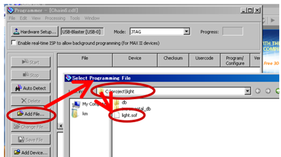

実習4: Verilog-HDLとFPGAの基礎演習
実習4では、Verilog-HDL を用いて、二進数を十進数に変換して7セグメント LED に表示するプログラムを通じて、Verilog の基本文法や FPGA の動作を理解していきます。
Quartus 開発環境の設定
まず、この実習では、Quartus という開発環境を使って FPGA ボードに回路を実装します。Quartus は、Verilog-HDL で記述したプログラムを使って FPGA を設計・実行するためのツールです。今回の実習では、この開発環境を使ってプログラムを作成し、コンパイルした後、実際に FPGA で動作を確認します。
1. bin2dec_1digit/bin2dec.qpf ファイルをダブルクリックしてプロジェクトを開きます。
2. Quartus 内の Project Navigator から bin2dec をダブルクリックし、プログラムを確認します。
例題回路のデモ手順
1. HDL を論理合成
まず、作成した Verilog-HDL コードを Quartus で論理合成します。論理合成は、HDL で記述された回路を FPGA が理解できる形式に変換するプロセスです。Quartus では以下の手順で論理合成を行います。
- Quartus のメニューから Processing を選択します。
- Start Compilation をクリックして、合成プロセスを開始します。
このステップにより、HDL で記述した論理回路が FPGA に適用できる回路形式に変換されます。合成が成功したかどうかは、コンパイル結果として確認できます。
3. 論理合成された回路をFPGAにマッピング
プログラムの書き込み手順
ここからは、作成したプログラムを FPGAに書き込む手順について説明します。プログラムを修正した後は必ず、コンパイル→FPGAへの書き込みという作業が必要です。
書き込みモード
書き込みモードには JTAG と Active Serial がありますが、この実習では JTAG モードを使用します。
ボード上のRUN/PROG スイッチを「RUN」位置に設定することで、JTAG モードが選択されます。この設定により、JTAG モードで書き込みが行われるようになります。
このスイッチが RUN 側に設定されていないと、プログラムが正常に動作しません。時々「PROG」側に切り替わっていることがあるので、不具合が発生した場合はこの設定も確認してください。
書き込み手順
- DE2-115の電源をON
- Quartus- IIで書き込み設定
- USB-Blaster の設定
- USB ケーブルが正しく接続されているか。
- DE2-115 のパワースイッチがONになっているか。
- PCに正しいドライバーがインストールされているか。ドライバーがインストールされていない場合は、スタッフに連絡してください
- プログラムファイルの選択
- 書き込みの開始
Power On/Off スイッチを押して、ボードの電源を入れます。
Quartus- II を開き、メニューから Tools > Programmer を選択します。
Programmer ウィンドウが開きます。
Hardware Setup ボタンをクリックして、Available hardware items に USB-Blaster が表示されていることを確認します。
USB-Blaster が表示されない場合は、以下を確認します:
Programmer ウィンドウで「Add File...」ボタンをクリックし、プロジェクトディレクトリから拡張子.sof ファイル(例: bin2dec.sof)を選択します。
プログラムが正しく選択されたことを確認したら、「Start」ボタンをクリックして書き込みを開始します。
Progress ボックスに進捗が表示され、エラーがなければ書き込みは成功です。
デモ結果の確認
- スイッチ入力を変更すると、FPGA ボード上の7セグメント LED に対応する 10進数が表示されることを確認します。
- このプログラムは、リセットボタンを押すと動作が開始され、結果が表示される設計になっています。初めての実行時に何も表示されず、慌てることがよくありますが、必ずリセットボタンを押して動作を確認します。
- 入力が正しく変換され、7セグメント LED に表示されることで、回路が正しく設計・実装されたことが確認できます。
例題回路の HDL 記述の詳細解説
PDF で示された例題回路の Verilog-HDL の記述内容について、詳細に解説します。
1. モジュール bin2decの解説
まず、メインのモジュールとしてbin2dec が定義されています。
module bin2dec (CLOCK_50, KEY, SW, HEX0);
input CLOCK_50; // ボードクロック50MHz
input [3:0] KEY; // rstn用プッシュスイッチ
input [17:0] SW; // 2進数入力用スライドスイッチ
output [6:0] HEX0; // 出力用7セグLED
seg7_decimal_1digit u0(.clk(CLOCK_50), .rstn(KEY[0]), .in(SW[3:0]), .out0(HEX0));
endmoduleこのモジュールは、ボードクロック、リセット用プッシュスイッチ、2進数入力スライドスイッチを受け取り、その結果を7セグメント LED に表示するための回路です。
module bin2dec (CLOCK_50, KEY, SW, HEX0);- CLOCK_50: 50MHz のボードクロック入力。
- KEY: リセット用プッシュスイッチ(4ビット)。
- SW: 18 ビットのスライドスイッチ入力(2進数)。
- HEX0: 7 セグメント LED への出力。
次に、seg7_decimal_1digit というサブモジュールが呼び出され、表示すべき数値が計算され、7セグメント LED に出力されます。
seg7_decimal_1digit u0(.clk(CLOCK_50), .rstn(KEY[0]), .in(SW[3:0]), .out0(HEX0));ここで、SW[3:0]は2進数の4ビット部分が取り出され、seg7_decimal_1digit モジュールに渡されます。
2. モジュール seg7_decorder の解説
次に、seg7_decorder モジュールが定義されています。
module seg7_decorder (in, out);
input [3:0] in;
output [6:0] out;
assign out =
(in == 4'd0)? 7'b1000000:
(in == 4'd1)? 7'b1111001:
(in == 4'd2)? 7'b0100100:
(in == 4'd3)? 7'b0110000:
(in == 4'd4)? 7'b0011001:
(in == 4'd5)? 7'b0010010:
(in == 4'd6)? 7'b0000010 :
(in == 4'd7)? 7'b1111000:
(in == 4'd8)? 7'b0000000 :
(in == 4'd9)? 7'b0010000: 7'b1111111;
endmoduleこれは、4ビットの2進数入力を7セグメント LED 用の7ビット信号に変換するためのデコーダーです。
このデコーダーでは、入力が0から9までの2進数に対応して、7セグメント LED の表示パターンが決定されます。それ以外の入力は全て 7'b1111111(点灯なし)とされます。
3. モジュール seg7_decimal_1digit の解説
最後に、seg7_decimal_1digit モジュールが定義されています。
module seg7_decimal_1digit (clk, rstn, in, out0);
input clk, rstn;
input [3:0] in; // 10進数に変換したい2進数
output [6:0] out0; // 各7セグLEDへの出力
reg [3:0] tmp_reg; //変換用計算用レジスタ
reg [3:0] digit0; // 各7セグLEDが表示するべき10進数
seg7_decorder d0(.in(digit0), .out(out0));
always @(posedge clk or negedge rstn) begin
if (!rstn) begin
tmp_reg <= in;
digit0 <= 4'd0;
end else begin
digit0 <= tmp_reg;
end
end
endmoduleこれは、ボードクロックとリセット信号を受け取り、入力された2進数を7セグメント LED に表示する役割を果たします。
- clk: クロック信号。
- rstn: リセット信号(KEY[0])。
- in: 4 ビットの2進数入力(スイッチの値)。
- out0: 7 ビットの7セグメント LED出力。
このモジュール内では、tmp_reg というレジスタに入力値が一時的に格納され、digit0 にその値が渡されて、7セグメント LED に出力されます。
always @(posedge clk or negedge rstn) begin
if (!rstn) begin
tmp_reg <= in;
digit0 <= 4'd0;
end else begin
digit0 <= tmp_reg;
end
endrstn がアクティブ(リセット)されている間、tmp_reg に in が格納され、digit0 には 4'd0 が代入されます。
リセットが解除されると、tmp_reg の値が digit0 に渡され、7セグメント LED に出力されます。
全体のまとめ
例題では、2進数入力を7セグメント LED に表示するために、複数のモジュールが協力して動作します。
- bin2dec モジュールは、クロックやリセット、スイッチ入力を受け取り、内部で seg7_decimal_1digitを呼び出します。
- seg7_decimal_1digit モジュールは、入力された4ビットの2進数を処理し、それを7セグメント LEDで表示します。
- seg7_decorder モジュールが、その2進数を具体的な LED の表示パターンに変換します。
これらのモジュールが連携して動作することで、ボード上のスライドスイッチに応じた数字が7セグメント LEDに表示されます。